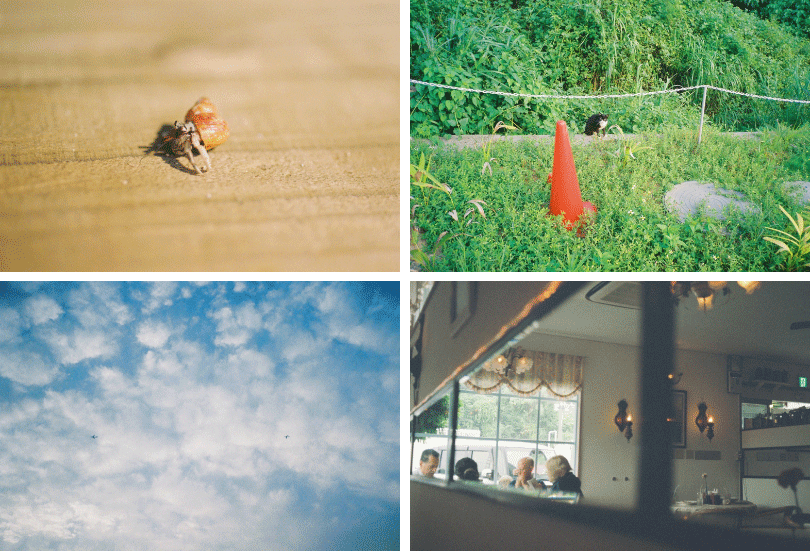
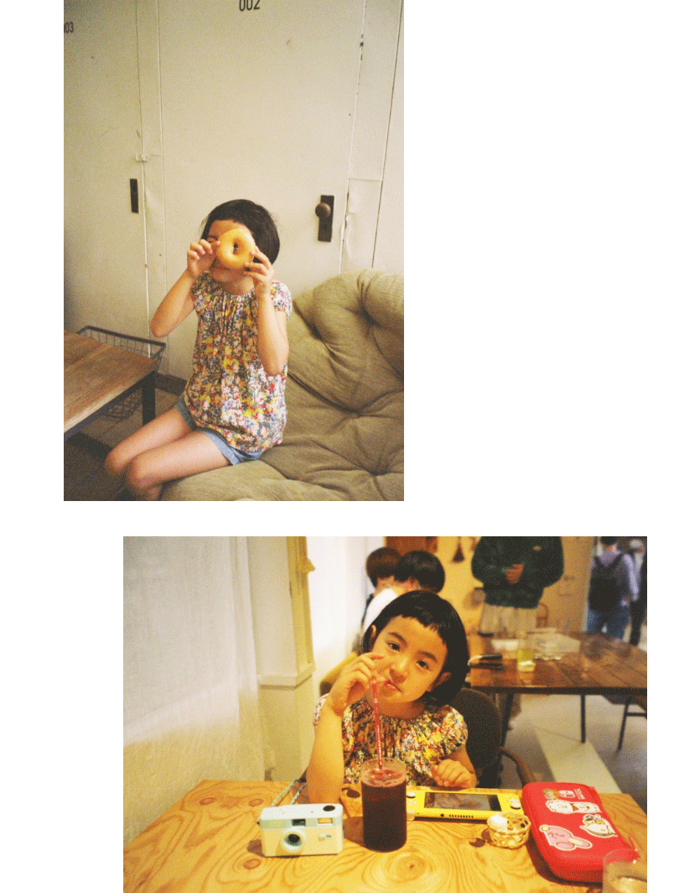
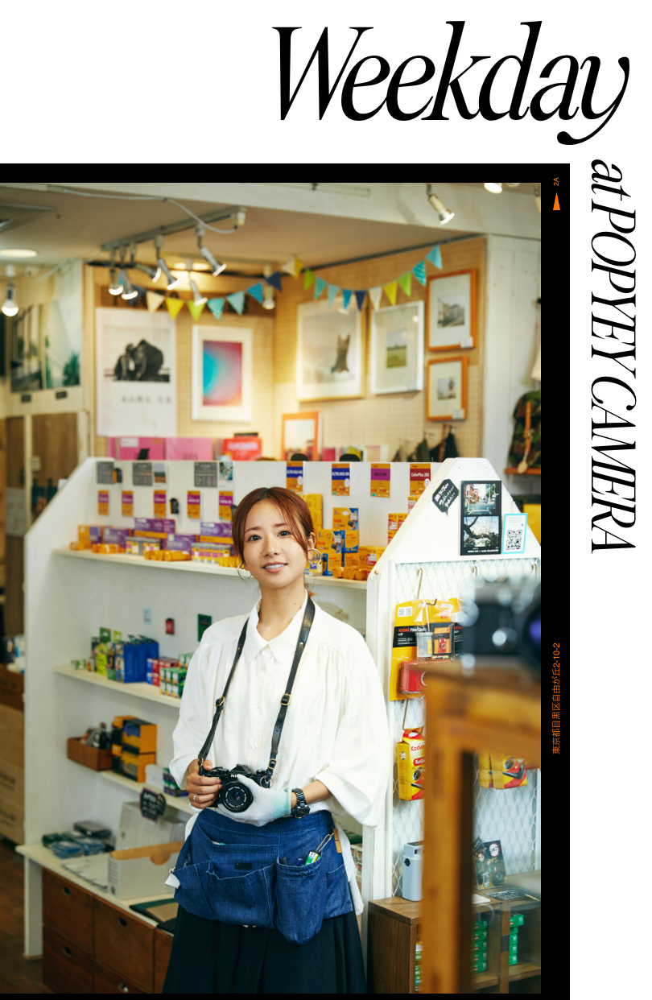
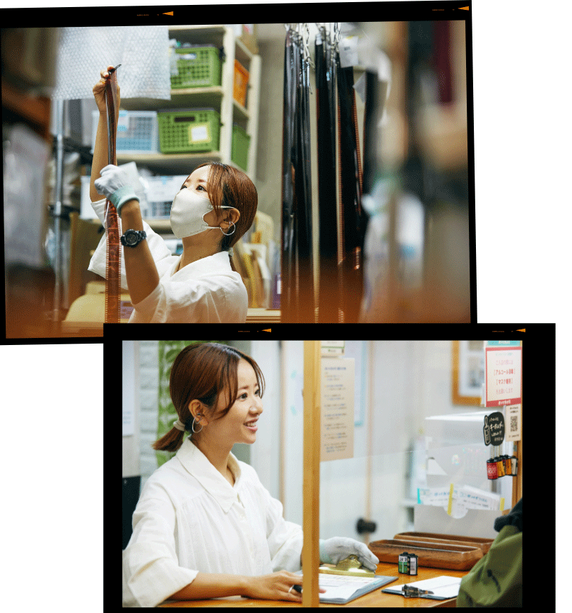
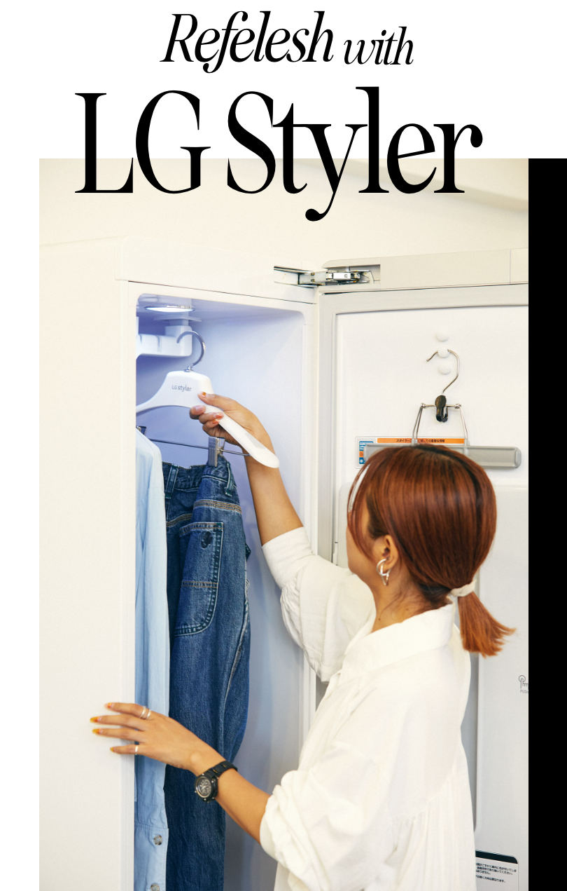
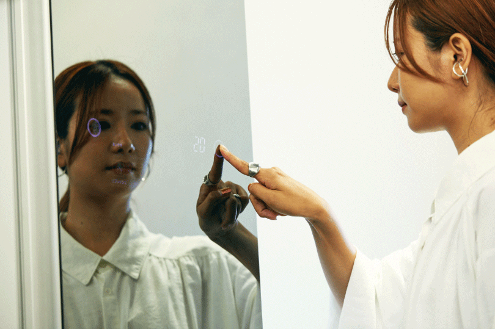
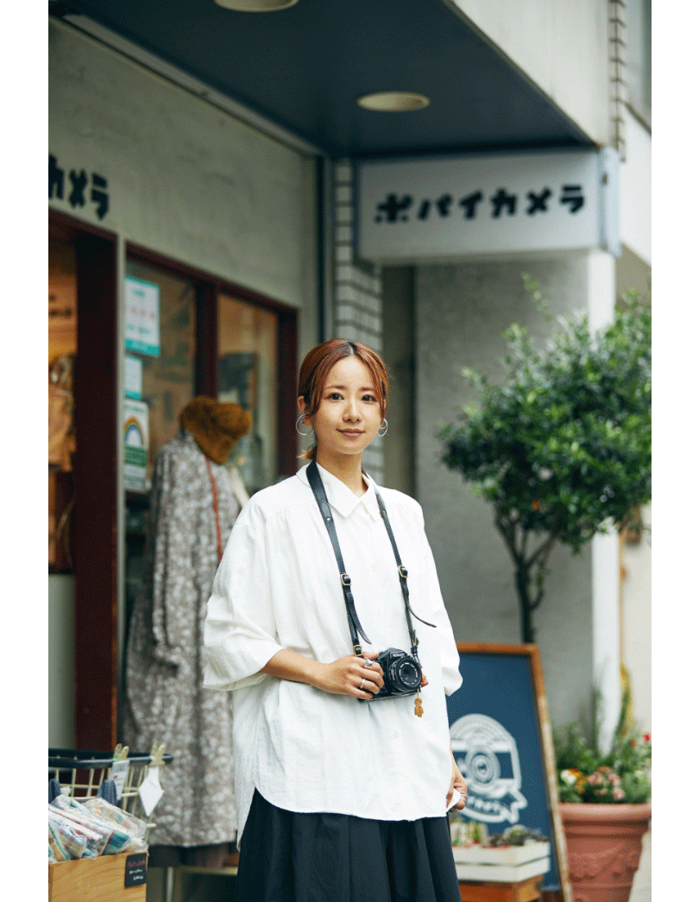

「頭で考えて写真を撮ることはないんです。感覚的にシャッターを切るし、ごく当たり前の日々の一部。そういう意味では、自分が穏やかな気持ちの時や、肩の力を抜いている瞬間が残っているかもしれません」。
Dream Ayaさんがシャッターを押すのは、何を撮ったのか尋ねたくなるような、さり気ない一瞬。自身の感性で、日々の中にある美しさや温かさを見出す。
Composition & Text: Takako Nagai [CATAL DESIGN]
2022.07.22
自由が丘のポパイカメラで働きながら、写真を撮ったり絵を描いたり旅に出たり…仕事とプライベートを自然体で過ごすDream Ayaさんは、リラックスの仕方をよく知る人でもある。ささいでも暖かな一瞬を切り取る彼女に尋ねたのは、最近の写真のこと、リフレッシュのこと。

「カメラを持って旅に行くのが大好き。20代の頃は仕事に打ち込んでいたこともあって、一度も旅が出来ていなかったんです。30代になったら絶対に色々なところに行くというのが一つの夢で(笑)。今は自分で自由な時間を作れるようになって、ちょうどコロナ禍への対策も見えてきたタイミング。気を付けながらも各地を回って写真を撮っています。5月には沖縄に行きました。そういえば道端でヤドカリを発見した時は嬉しくなっちゃいましたね。昔は家の近所でよく見かけていたのに、最近は出会えてなかったなと。友人に教えていただいた沖縄中部のカフェでは、海外に居るかのようなひと時を過ごせたりして」。
「東京タワーでお仕事をした時に気付いたのが、東京に20年住んでいるのに、真下から見たのは初めてだな、と。20年越しの記念すべき写真です(笑)」。

「友人が東京で個展をした時、その妹ちゃんにも会うことができました。この家族に会うと芯から癒されるんです。こうして振り返って眺めながら、あんなことがあったなとクスっと笑えるのっていいですよね」。

「ポパイカメラさんで働かせていただきながら、自分の写真の現像もこちらでやっています。創業80年以上の老舗なのですが、とても温かいお店。好きな写真家さんや写真集、使っているカメラを教えていただいて、お好みの仕上がりにオーダーいただくことも出来ますよ。郵送でのフィルム現像サービスも行ってますし、 ポパイカメラのオリジナルのUSBも販売していてデータ化に便利。私の好きな写真家さんにポパイカメラを使っていただくこともありますし、私自身が大好きなお店です」。


「平日は外に出ずっぱりになってしまうことが多く、お休みのリフレッシュといえば、お掃除。枕カバーや毛布をLG Stylerに入れて、その間に細かな家事を済ませられるのが有り難い。とはいえ、毎日使っているものでもあります。結婚してから洗濯の量が2倍になり、特に花粉の季節は洗濯機を回す回数が多くて…。ちょうどその時期にLG Stylerを導入して、助かりました。冷蔵庫を使う感覚で、帰宅したらさっとアウターをこの中に入れちゃう。そのおかげで、家でくしゃみをすることが減りました(笑)」。

「特に活躍するのがデニム。型崩れや洗い皺の心配がありません。これまでは毎日のように洗濯機を回して何十リットルとお水を使っていたところ、LG Stylerなら少量のお水で済むのも嬉しい。大きい家電ですが、お部屋に馴染んで違和感もありませんし、洗濯とクリーニングが減ったことに、とにかく感謝。この子が家に来てくれて本当に良かったです」。


1987年、大阪府出身。2017年7月に音楽活動を引退後、写真や絵などのアートな才能を活かしクリエイターとして活動をスタート。2020年1月より写真家として独立。現在は、写真家としてアパレルブランドのヴィジュアルやアーティストのジャケットなどの撮影に留めることなく、様々な企業やメーカーのクリエイティブディレクションやイラストなども手掛けている。2020年よりライフスタイルブランド”asebi”を立ち上げ日本の伝統文化、地球環境、地球創生を意識した商品を提案している。
Composition & Text: Takako Nagai [CATAL DESIGN]